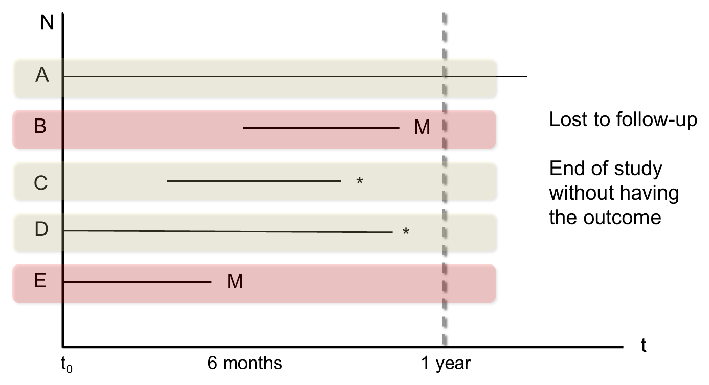
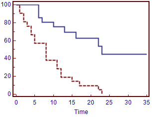
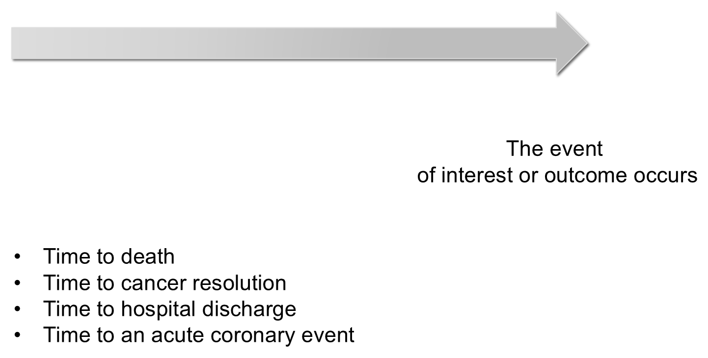
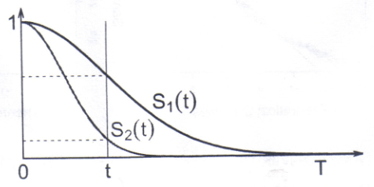
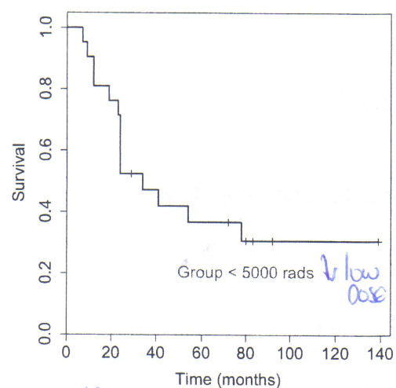
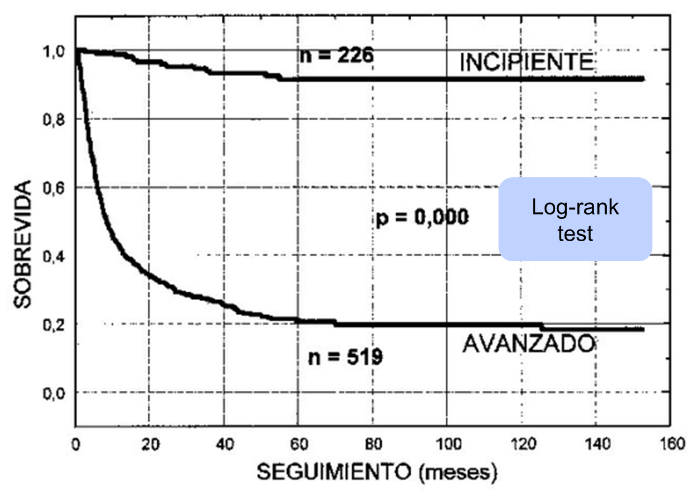
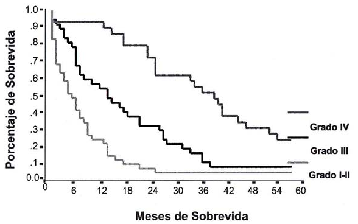

Main feature of survival analysis: censoring

M = lost to follow-up; * = end of study without having had the outcome
Section 6 — Introduction to Biostatistics
Department of Anesthesiology, Universidad del Cauca, Colombia
Department of Anesthesiology, Erasmus University Medical Centre, Rotterdam, The Netherlands
2026-10-04

Sometimes, the calculation of the cumulative incidence is insufficient to describe more complex situations appropriately.

Time until the event of interest or outcome occurs

M = lost to follow-up; * = end of study without having had the outcome
\[S(t) = P(T > t), \quad t \geq 0\]



Log-rank test: survival by follow-up (months), early (n = 226) vs advanced (n = 519) stage

Percentage survival (y-axis) by months of survival (x-axis) for tumour grade I–II, III and IV
Recommendations, comments and more
@jacalvache
jacalvache@unicauca.edu.co